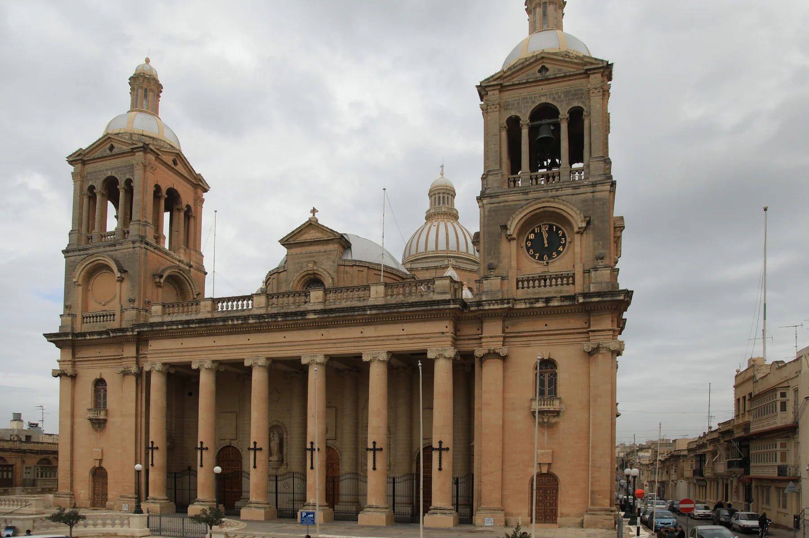

The council records the town's seventeenth-century foundation and grid. That history does not place a listing on a historic street.

PAOLA · RAĦAL ĠDID · MALTAPlanned streets.
Planned streets.
Deep history.
Paola combines a seventeenth-century civic plan with managed prehistoric sites and a dense contemporary town. Il-Fgura, Ħal Tarxien, Il-Marsa and the Cottonera localities remain separate places.
READ THE LOCALITY PRECISELY
Start with Paola, then locate the street.
The civic grid, basilica, Ħal Saflieni area and Kordin or Corradino context are different parts of one locality. An exact address still determines the everyday street, useful transport and access conditions.
The Hypogeum and Kordin III have separate operating and booking conditions. A heritage record is not an always-open promise.
The broad map centre helps position Paola. It proves nothing about a listing's street, view, parking or walking time.
A town route is not a property journey.
Malta Public Transport currently publishes Route 401 as a Paola circular. Use the live operator page for departures, diversions and connections rather than relying on frozen brochure times.
The exact street answers the practical questions.
Confirm evening traffic, parking arrangement, pavement continuity, entrance access, the nearest useful stop and the actual route to regular errands. A Paola label or locality centroid cannot answer them.
EVERYDAY ORIENTATION
Use durable public anchors, then verify locally.
The council, health service and live transport page provide a responsible first check. Shops, operators and street-level convenience still need current verification.
Paola Local Council
Use the official council site for current notices and local administration rather than freezing service details into a brochure.
Paola Health Centre
Primary HealthCare places the centre at Pjazza A. De Paule. Check its live page for services, eligibility, appointments and opening information.
Route 401
This establishes a current operator corridor only. It does not guarantee a frequency, connection, nearest stop or property-specific journey time.
Verify the exact street
No durable grocery anchor was established in this research pass. Check current shops and the actual walking environment from the property.
FOOD, WITHOUT RANKINGS
A licence register is a starting point.
The Malta Tourism Authority's current Paola filter returned four licensed restaurant records when checked on 23 October 2026. Licensing does not establish quality, cuisine, price or today's opening hours.
Ark and Trattoria Panormus
The register places Ark Restaurant on Triq Bormla and Trattoria Panormus on Triq Guze' Damato. These are address examples, not recommendations or proof of current operation.
Check the operator directly
Confirm that the venue is trading, the address is current and the service suits the occasion. This edition deliberately avoids “best” lists and review-score claims.
Open the broad locality overview only when you need it.
The map frames Paola and surrounding place labels for orientation. It deliberately draws no boundary, route, distance, travel time or listing location and loads from OpenStreetMap only after your click.
Malta Address Registrar · Paola Local Council · Archdiocese basilica context · Ħal Saflieni Hypogeum · Kordin III · Paola Health Centre · MPT Route 401 · MTA restaurant register. Volatile access and service details require a fresh check.
Neighbourhood edition. No ranking, fixed opening hour, property-specific distance, guaranteed view, parking claim, accessibility promise, route or journey time is implied.
Continue with the Il-Fgura, Marsa, Ħaż-Żabbar, Żejtun and Valletta editions, or return to all neighbourhoods.